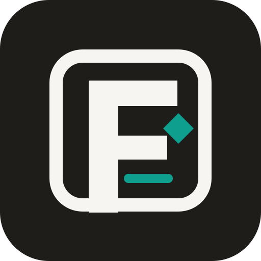
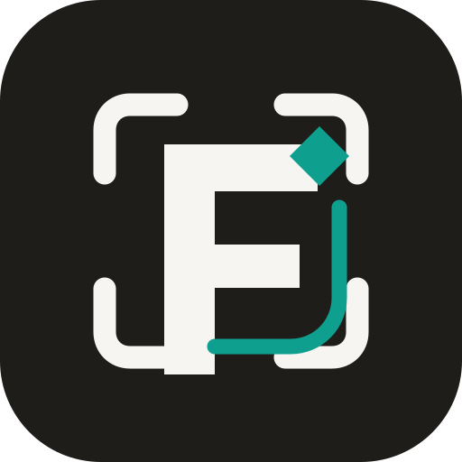
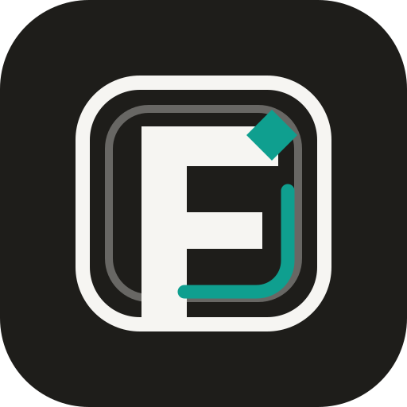
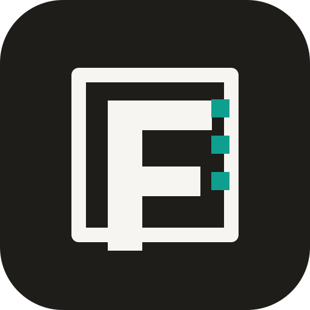
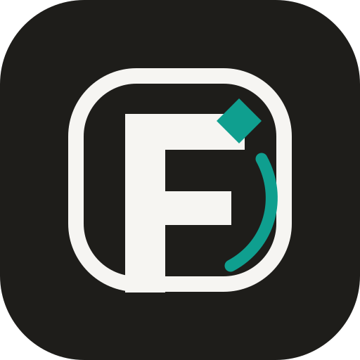
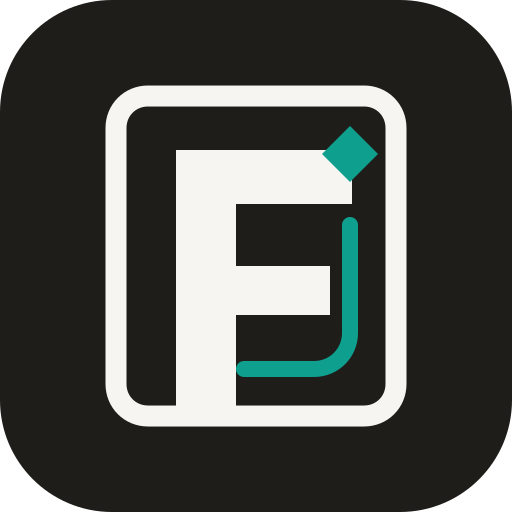
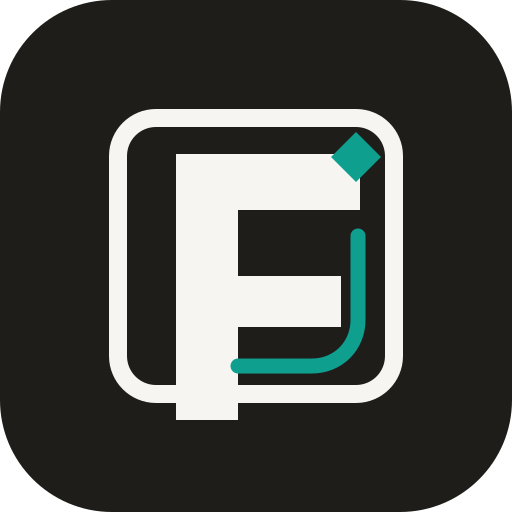
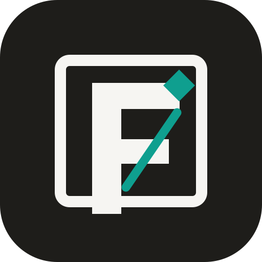
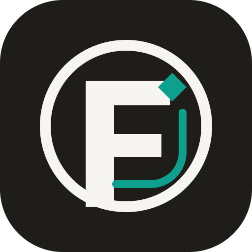

01 Original Frame
Balanced, proven starting point.
Build
Ten directions based on the stronger dark-frame route. These preserve the premium black field, off-white frame, built F, and teal active signal.
Balanced, proven starting point.

Strongest at tiny sizes.

Governance without a heavy box.

Best system/proof feel.

Operational and evidence-led.

Most approachable.

More architectural.

Cleanest mark geometry.

Most active, less formal.

Most institutional.
Shortlist: 02 for app-icon clarity, 03 for premium distinctiveness, 04 for governance/proof, and 08 for the cleanest product mark. I would avoid 09 unless the brand needs more movement than authority.